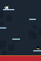
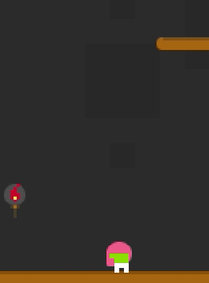

Bewitched!
A postmortem
Intro
The js13kgames jam is a yearly event in which devs are challenged to make a game in less than 13k(zipped). Running since 2012 it's pretty popular and has spawned a quite a few amazing games.
I had entered previous years. Recently, work and other commitments had got in the way. This year, I was determined to knock something out.
Ideas
The 2023 theme was The 12th Century. A quick bit of googling turned up famous events from the period. But nothing got my creative juices flowing.
That distant period, for me, conjures up images of magic, witches and superstition. So, I decided to run with that. Who needs meticulous research? Time to bring out the GIMP. After pushing some pixels, the following was produced:
One main goal was to make the game playable on mobile devices. This meant simple controls and something that worked well in portrait mode. Setting the game in a tower addressed the portrait mode issue. As for controls tapping left to move left and vice versa seemed a simple solution.

Rescue the cat and escape the tower.
Tooling
AKA, the un-fun part of web dev. Previous years I had used webpack for bundling etc. Webpack needs a bit of configuration, though. As time was limited I didn't fancy losing valuable dev time on plumbing. Having heard great things about esbuild, I decided to give it a whirl. Set up was a breeze and I was quickly up and running.
"start": "esbuild --bundle src/game/index.js --outfile=public/game.js --servedir=public --sourcemap --serve=8013",
Local dev server, source map and lightening fast builds. Not bad for a single line in package.json and no pesky config files to be seen. Time to get hacking.
Dev
I like to keep things simple. No great technical innovations, here. Just reliable old 2d <canvas> with a infusion of javascript. Resolution was set to a paltry 320x480 and then scaled up via CSS. Tiny graphics can now be scaled up for that retro pixelated look. Space is at a premium, remember?
The jam has a generous month to develop your game. I was a little late to the party, though. Work only started the weekend before the deadline. Borrowing the structure from my last entry I dived straight in.
Rather than creating a tiled map and the necessary overhead, I decided it would be easier if ledges where just standard entities for landing, reusing simple collision detection. This would save precious bytes and speed up development.
From here on, it was a simple case of adding different types of baddies and designing some levels.
Juicing
Following in the footsteps of the masters, it was time to add a bit of polish.
First up was some hair for our heroine. Recalling that the original Celeste PICO8 demo had a cool hair effect, I decided to steal borrow inspiration.
let r = 8; // radius
let last = {x: this.x, y: this.y}
this.hair.forEach((h, n) => {
r--;
h.x += (last.x - h.x) / 1.5;
h.y += (last.y + yOff - h.y) / 1.3;
this.g.draw.circle(h.x, h.y, r, this.hairColor);
last = h;
})
Cheap and effective... 
Throw in a basic particle entity and we're almost there.
Note: During development, I decided to ditch the witches hat and make our character brighter. This helped contrast with the dark background.
Panic
Basking in the glow of an almost finished game, I decided to test it on mobile. iOS nicely perfomant. Firefox on Android all good. Chrome on Android, should be excellent, right? Wait, what!! Contrary to expectations the game was un-playable on Chrome / Android. About as fast a cow with a sprained ankle running under water. Not the Sunday evening vibe I was hoping for. I tracked the issue down to the 'hair physics' and other elements using the standard canvas API for drawing circles. With no time to port my rendering to Web GL or using images, I decided to reduce these circles for Chrome. ¯\_(ツ)_/¯
What went well
- Adding SFX was a breeze with the excellent ZzFX.
- Keeping the idea simple and avoiding feature creep.
- Tinkering with game dev after a long break!
What went not so well
- Not testing on mobile until close to the deadline :\
- Designing levels by manually updating an array was pretty lo-tech.
What I would've done different
- Time was my biggest constraint so starting earlier would've helped.
- Adding music. Although, composition etc looks pretty tricky for a newcomer.
- Would've been cool to have a few people playtest the game and incorporate feedback.
- Added a level editor to design better levels, quicker.
Wrap up
All in all, it was a lot of fun making this game. Now to get playing all the other entries...